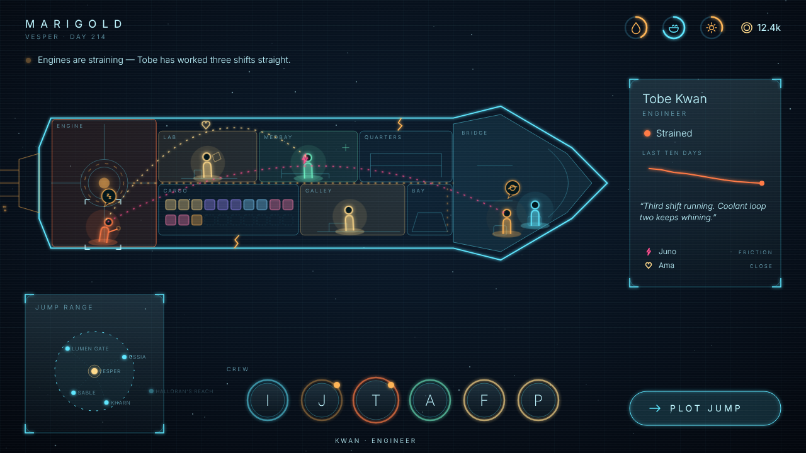
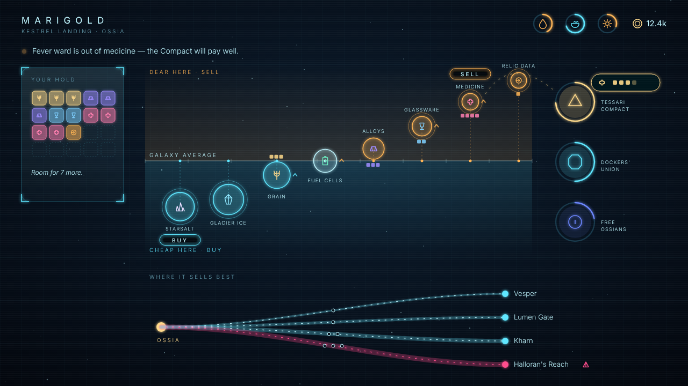
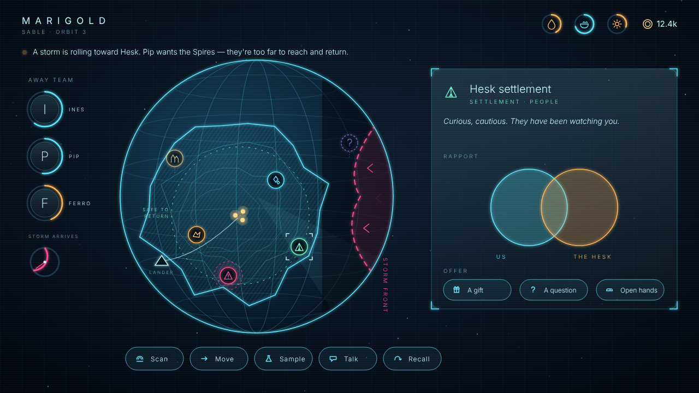
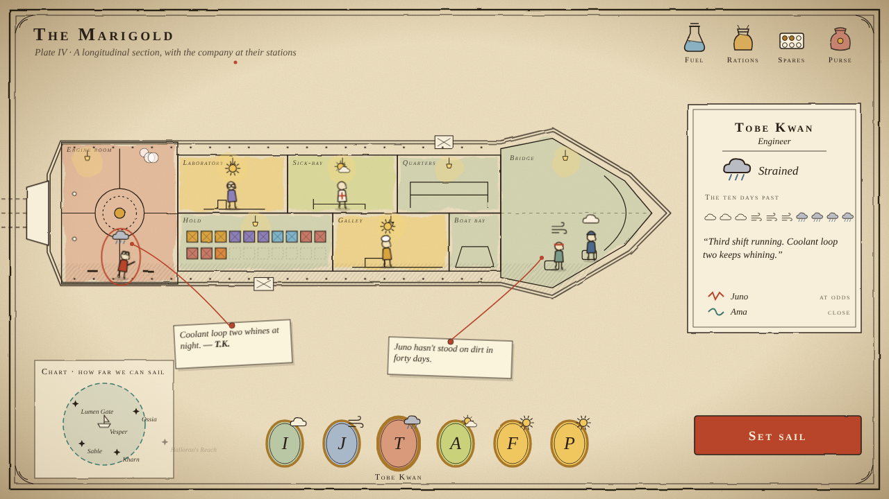
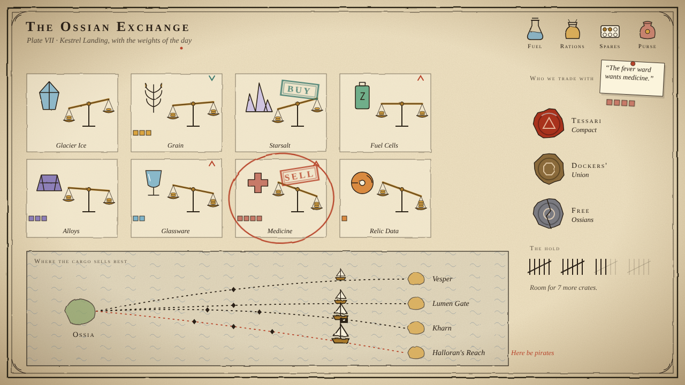
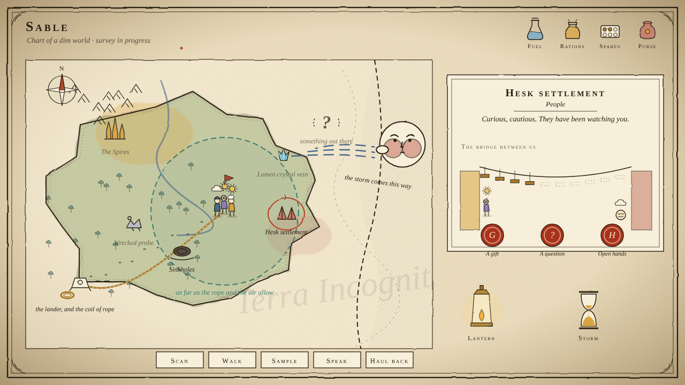
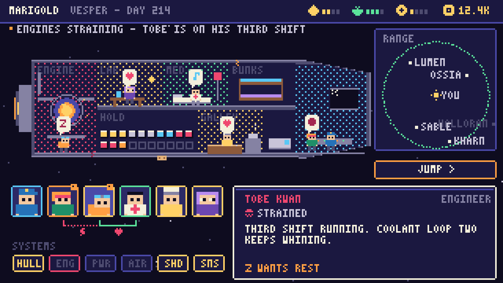
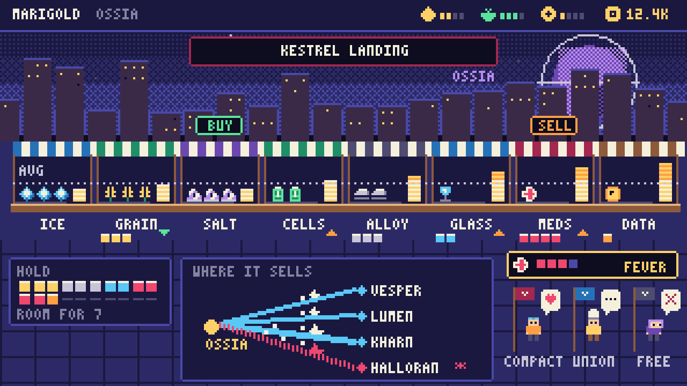
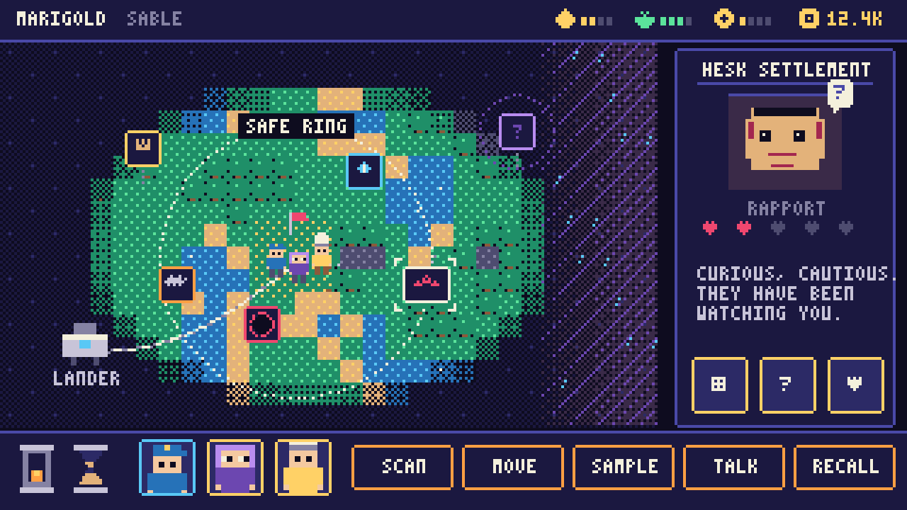

Starship UI
Three art directions for one sci-fi management game — crew, planet exploration, diplomacy and trading across star systems —
each with a ship screen, a trade-hub screen and an exploration screen. All nine render the same game state
(shared/state.js), so what changes is the language, not the data. Click any screen to open it live; inside, press
1 2 3 to switch screens, N to flip on the numbers lens, and click crew or map markers.
The shared idea: say it with the picture, not the table
A · Hologlass
Dark translucent glass, cyan line-work, amber and magenta only for things that need you. Thin light, lots of empty space; the information is the glow.



B · Cartographer
An explorer's atlas on warm parchment: ink, watercolour wash, brass, wax seals. Everything is a drawn object — weather for mood, flasks for supplies, balance scales for price.



C · Pixel Bridge
Chunky 320×180 pixel art with a 3×5 bitmap font, drawn from code. A game-feel language of emotes, dialogue boxes, coin stacks and lamps that only light when something is wrong.



Same idea, three dialects
| Question the player asks | Hologlass | Cartographer | Pixel Bridge |
|---|---|---|---|
| How is the crew? | Halo colour + pulse, posture, thought-bubble | Weather over the head, wash on the room, ten-day forecast | Emote bubble, slump / bounce, portrait frame colour |
| Who clashes? | Jagged magenta vs. soft gold threads | Zig-zag vs. wavy ink ribbons | Red bolt vs. heart under the portraits |
| Can we get there? | Dashed range ring on the star map | Compass-drawn range circle, faded far isles | Dotted range ring, dim far stars |
| Is this cheap or dear? | Height above/below the fair line | Tilt of a brass balance | Coin stack against the average line |
| Where will it sell? | Bezier lanes: width = profit, dashes = danger | Voyage chart: ship size = profit, skull flag = pirates | Lanes with sail size and pips for jumps |
| How do they feel about us? | Ring around a faction medallion | Wax seal: bright, plain, cracked | Merchant emote |
| How close are we to the locals? | Overlapping circles | Planks on a rope bridge | Five hearts |
| How long do we have? | Sweeping arc + storm front | Hourglass + wind-head | Hourglass + rain wall |